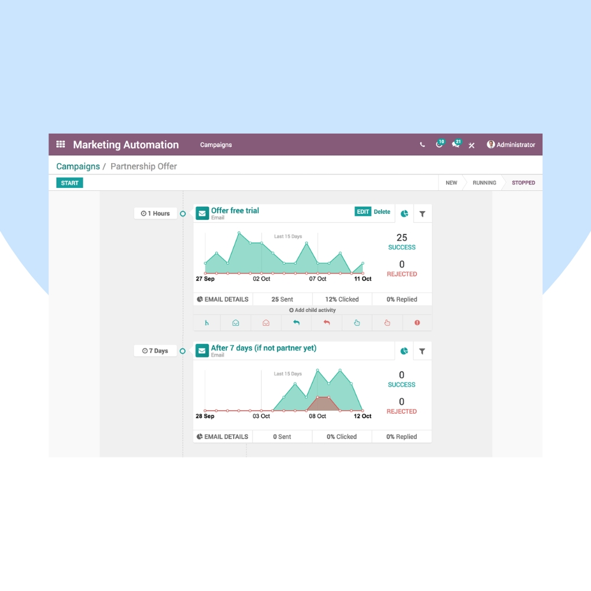
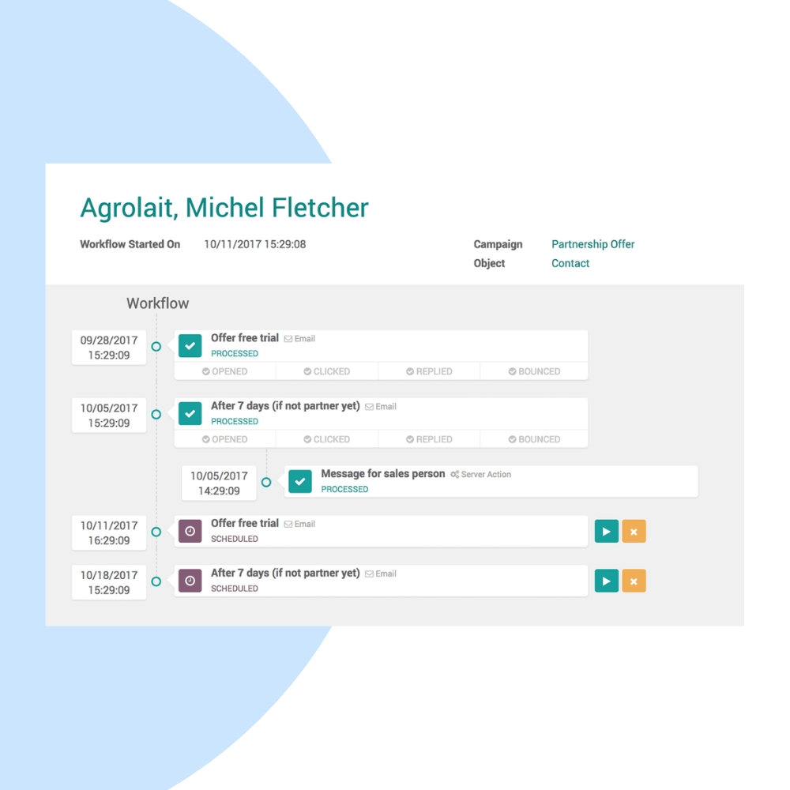
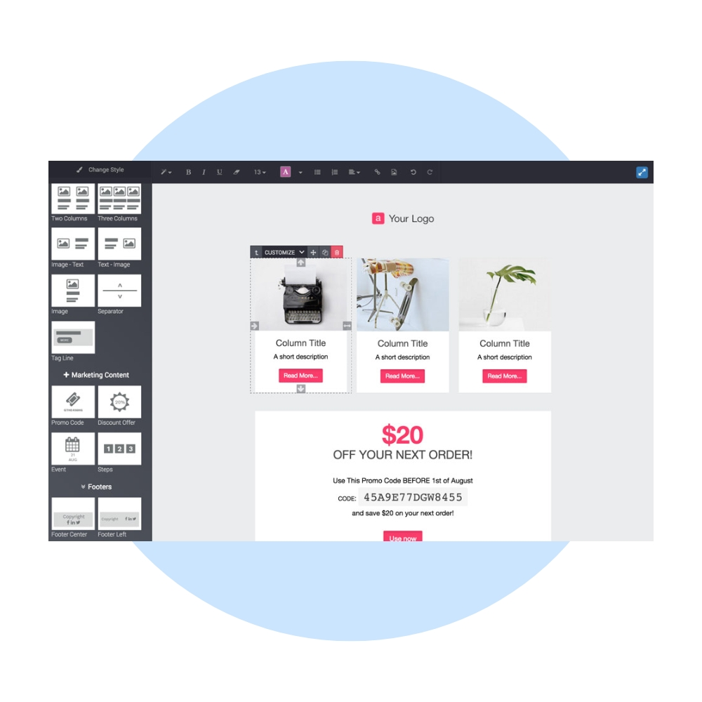

Convert leads into customers automatically with Odoo Marketing Automation. We help businesses design multi-step customer journeys, automate emails and SMS, and trigger actions based on real user behavior.
We configure Odoo Marketing Automation to match your sales funnel, customer lifecycle, and marketing goals. Integrate automation seamlessly with CRM, Email Marketing, SMS Marketing, Website, and Events.


Our implementation ensures automated lead nurturing, personalized engagement, and measurable results across all marketing touchpoints.
Design multi-step customer journeys visually.
Trigger actions based on real customer behavior.
Send messages automatically at the right time.
Convert prospects into qualified leads.
Measure conversions and journey effectiveness.
Connected with CRM, Sales & Marketing tools.
We help you continuously optimize automation workflows, improve conversion rates, and scale your marketing operations efficiently.
